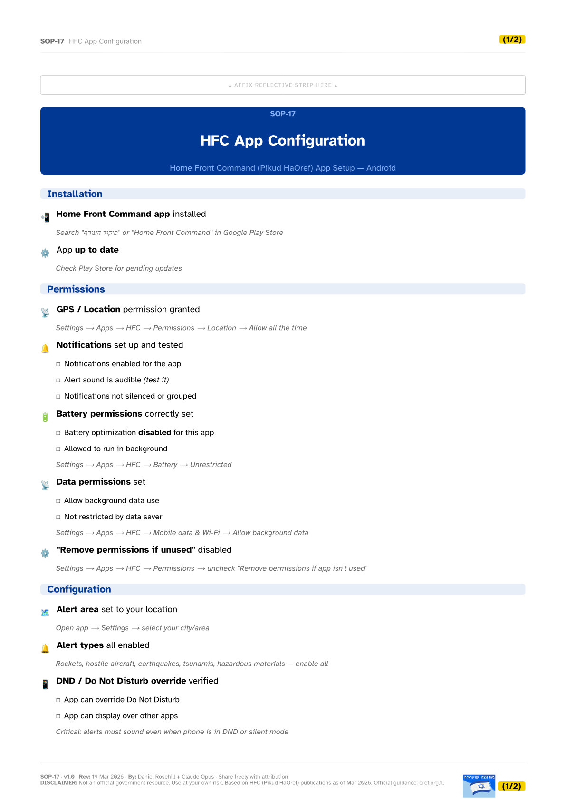
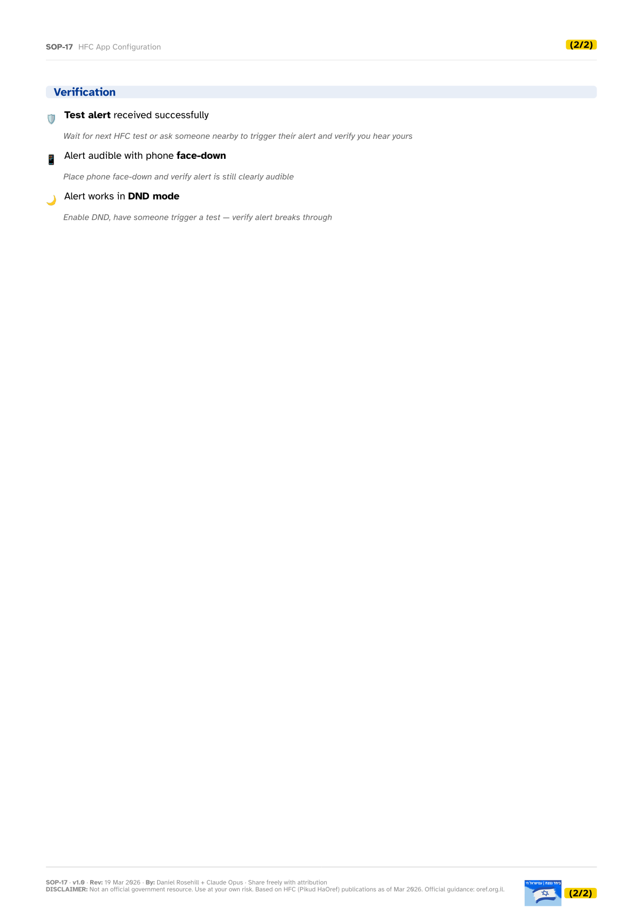

SOP-17
HFC App Configuration
Home Front Command app setup for Android — permissions, notifications, DND override.


SOP-17 — Preparedness
Home Front Command app setup for Android — permissions, notifications, DND override.

